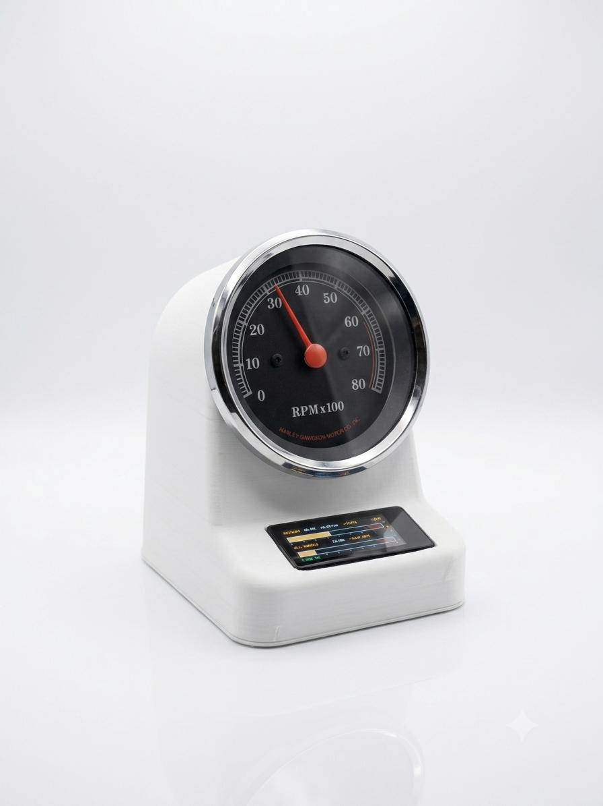
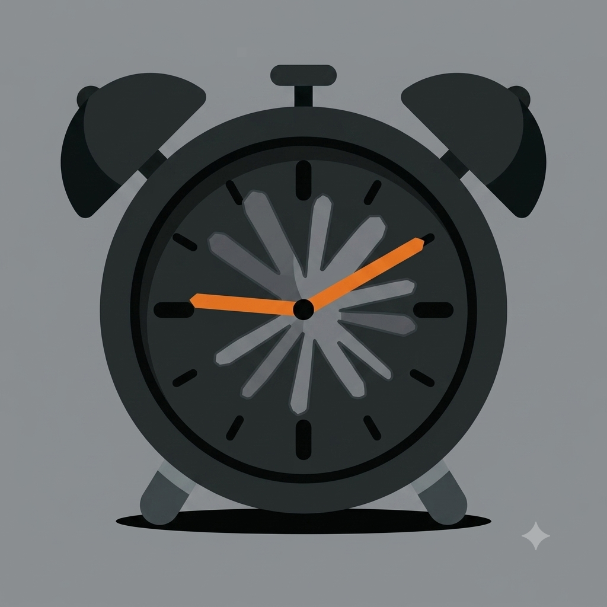

Clauke
· 1,292 words · 7 minutes reading time ESP32 Arduino Python Bluetooth 3D Printing
Motivation
I wanted a way to keep an eye on Claude Code usage and my machine's vitals without another menu bar percentage competing for attention. A gauge you glance at, rather than a number you have to parse, felt like the right interface — and I had a real Harley-Davidson tachometer sitting around from one of the motorcycles I've rebuilt over the years. Motorcycle tachs are simple, elegant, purely mechanical-looking instruments, but under the dial they just count ignition pulses. If I could generate the right pulse train, nothing would stop the needle from tracking CPU load, memory pressure, or a Claude session's percent-to-limit instead of engine RPM.
Clauke is the result: a battery-powered ESP32 gadget that drives a real tachometer needle from live data, paired with a touchscreen for context and a Mac menu bar app that feeds it.

Methodology
Emulating the tach's ignition signal
A Harley tachometer expects one pulse per engine revolution — that's the entire interface. To make the needle move, an ESP32-S3 outputs calibrated pulses on a GPIO pin, which drive a 2N2222 transistor wired as a switch: base through a ~1k resistor off the GPIO, emitter to ground, collector to the tach's signal line with a 1k pull-up to a boosted 12V rail (the gauge wants automotive-ish voltage, not the ESP32's 3.3V logic). An MT3608 boost converter steps the LiPo's ~3.7–4.2V up to that 12V rail, and a small cap across the signal line smooths the needle at idle so it doesn't chatter between pulses.
TP4056 USB charging module
│
Battery
│
├──> ESP32 board
│
├──> MT3608 boost → 12V
│ │
│ ├──> Tach +12V
│ │
│ └──> Pullup resistor
│ │
│ Tach Signal
│ │
│ Collector
│ 2N2222
│ Emitter
│ GND
ESP32 GPIO ──> Base resistor ──> 2N2222
Pulse width scales with RPM — wider at idle — which keeps the needle steady rather than jittery at low readings. The mapping itself is deliberately mechanical-feeling: 0–80% of whatever metric is selected maps linearly to 0–8000 RPM, so 80% lands exactly on the tach's 8k redline mark. Below roughly 500 RPM the needle rests at true zero, and above 80% it doesn't just pin — it shakes against the redline the way a real engine bounces off a rev limiter. The needle is always live and simply follows whichever page is active; there's no separate on/off state for it.
Five pages, one touchscreen
The enclosure is 3D printed and holds the tach, an ESP32-S3 board with a built-in AMOLED touchscreen, and the battery and charging circuit. Swiping up or down anywhere on the screen pages through five views (borderless dots down the right edge show position):
- OVERVIEW — an at-a-glance summary of usage, battery, and CPU. The tach needle parks here, so this page doubles as a "sleep" state.
- RIDE — the Claude usage feed: session percent (drives the needle, rendered as a moto-style gauge bar with a redline), burn rate, and reset time, plus the all-models weekly percent and its own reset. Falls back to a "NO DATA" state after ten minutes of silence from the host.
- SYS — retro CPU / GPU / MEM / TEMP bars pulled from the host machine. Tapping a bar selects which metric drives the needle (CPU by default).
- LIPO — real battery percentage and voltage, read off the divider on GPIO1, with a charging-bolt indicator when powered over USB.
- TEST — sweeps 0–8000 RPM, or holds a fixed RPM if you tap the left half of the screen — mostly there for calibrating the pulse driver against a multimeter.
Firmware runs on an ESP32-S3 (Arduino_GFX for the display, NimBLE-Arduino for
the wireless side). It exposes a GATT server advertised as HD-TACH: a
CMD characteristic the host writes usage/system lines to, and a BATT
characteristic that notifies battery percent on change. If BLE drops, the
firmware just re-advertises — no reboot required.
The host: a Mac menu bar app
clauke.py is a single-file Python program with two personalities. Run
without arguments, it launches as a rumps-based menu bar app that owns the
link to the gauge: it prefers Bluetooth (scanning for the HD-TACH service
UUID via bleak), and if nothing turns up it falls back automatically to USB
serial, matching the board by its Espressif USB vendor ID rather than a
volatile /dev name. A --cli flag switches it to a plain serial loop for
testing without importing rumps/bleak at all.

The menu bar icon on the right is a macOS template image — flat black
shapes on a transparent background — so the OS can tint it automatically for
light and dark menu bars; the app icon on the left is the full-color mark
used for the packaged .app. Dropping a replacement menubar_icon.png into
host/assets/ is picked up automatically, no rebuild needed.
The interesting part of the host is how it turns Claude usage into a live
number without hammering the API. A background thread estimates usage
locally every five seconds from ccusage's active-block token count, and
checks in against the authoritative OAuth usage endpoint only once every
three minutes — snapping the estimate back to truth whenever the two
disagree by more than 10 points:
def poll(self, now=None):
now = time.time() if now is None else now
if now - self.last_verify >= VERIFY_S:
a = fetch_actual()
if a:
self.actual = a
self.last_verify = now
tokens = fetch_block_tokens()
if tokens and a["session_pct"] > 1.0:
self.limit_tokens = tokens / (a["session_pct"] / 100.0)
session_pct = self.actual["session_pct"] if self.actual else 0.0
if self.limit_tokens:
tokens = fetch_block_tokens()
if tokens is not None:
est = min(100.0, tokens / self.limit_tokens * 100.0)
if self.actual and abs(est - self.actual["session_pct"]) > DISCREPANCY_PCT \
and now - self.last_verify < VERIFY_S:
session_pct = self.actual["session_pct"] # distrust the estimate
else:
session_pct = est
...
That estimate, plus CPU/GPU/MEM/temperature from psutil, gets written to
the wire as two plain ASCII lines — D,<sessPct>,<sessReset>,<ratePctHr>, <weekPct>,<weekReset> and S,<cpuPct>,<gpuPct>,<memPct>,<tempC> — sent over
whichever transport is currently connected. The battery percentage flows the
other direction, from device to host, over the same serial line or a BLE
notify. For day-to-day use, host/setup.py packages the whole thing with
py2app into a standalone Clauke.app — LSUIElement is set, so it runs
with no Dock icon and no Cmd-Tab entry, just the menu bar glyph.
Bill of Materials
| Component | Part | Notes |
|---|---|---|
| Controller | ESP32-S3 AMOLED dev board | Drives the tach + touchscreen, handles BLE/USB |
| Battery | Single-cell Li-ion (18650 or LiPo) | Powers the whole gadget |
| Battery holder | Wired battery pack | Holds the cell, brings out leads |
| Boost converter | MT3608, set to 12V | Powers the tach's signal/lamp rail |
| Pulse driver | 2N2222 transistor | Emulates the ignition pulse the tach expects |
| Gauge | Vintage Harley-Davidson tachometer | The reused instrument itself |
| Enclosure | Custom 3D-printed housing | Holds gauge, board, and battery |
Results
The electronics and firmware side is done: the needle tracks live data convincingly, complete with the redline shake, and the BLE/USB fallback means the gauge reconnects on its own whether or not the Mac happens to be in range. The menu bar app is the daily driver — it's the thing that's actually running while I work, quietly estimating usage between the authoritative checks and pushing it to the gauge over whatever link is up.
A couple of things are still on the list rather than fully nailed down: the
LiPo voltage divider's resistor values came off a flattened PDF extraction
of the schematic rather than a trace-by-eye or a multimeter reading, so the
LIPO page's percentage is closer than not but wants verification against a
real battery. And GPU percent and CPU temperature both need privileged
tooling (powermetrics via sudo) that the host doesn't invoke yet, so SYS
shows -- for those two on macOS for now. Neither blocks daily use — the
gauge sits on my desk, needle live, telling me what my session and my
machine are doing without a single glance at a menu bar number.